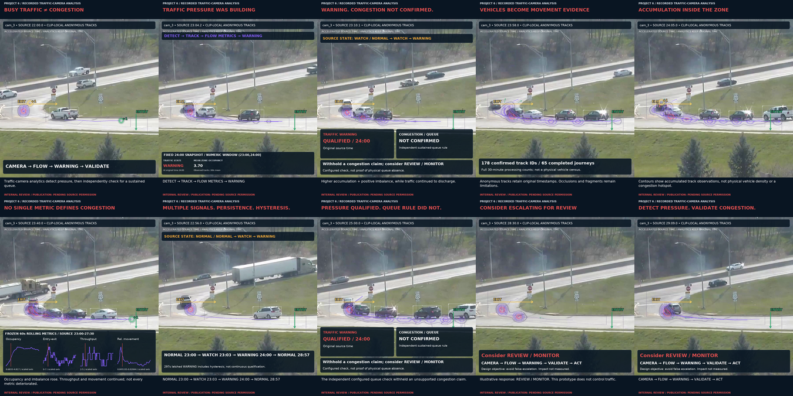
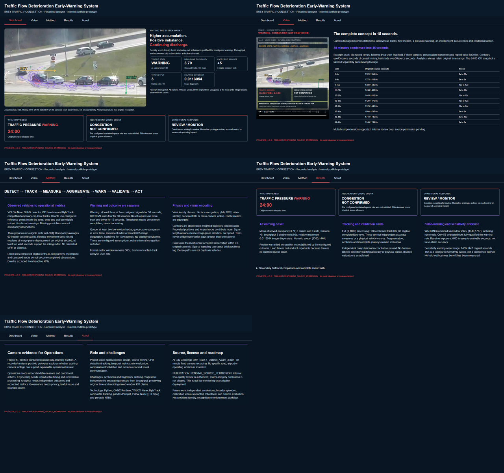

Traffic state
WARNING
Warning onset: 24:00
Camera analytics identified a sustained traffic-pressure warning at 24:00 while an independent congestion-validation layer correctly avoided escalating the episode into a confirmed queue event.
The warning layer responded to deteriorating traffic-flow conditions, but the separate queue-validation rule did not qualify a visible sustained congestion event. The system therefore recommends escalate for review rather than falsely claiming confirmed congestion.
All recruiter-facing KPIs below use the same (23:00, 24:00] analytical window. This avoids mixing historical comparisons with the actual warning-onset snapshot.
The project separates traffic-pressure detection from congestion confirmation, so an elevated warning state does not automatically become a stronger claim than the evidence supports.
YOLOX-Nano detections feed anonymous multi-object trajectories across a fixed traffic-camera scene.
Zone occupancy, directional entry/exit events, throughput and relative movement form an interpretable flow-state representation.
A deterministic state machine identifies sustained traffic pressure while independent queue validation prevents unsupported congestion claims.
The final presentation preserves original road imagery while layering causal trajectories, density signals, directional entry/exit emphasis and the evolving warning state.




The system combines computer vision, anonymous tracking, traffic-flow analytics, deterministic state logic and independent validation into one reproducible analytical pipeline.